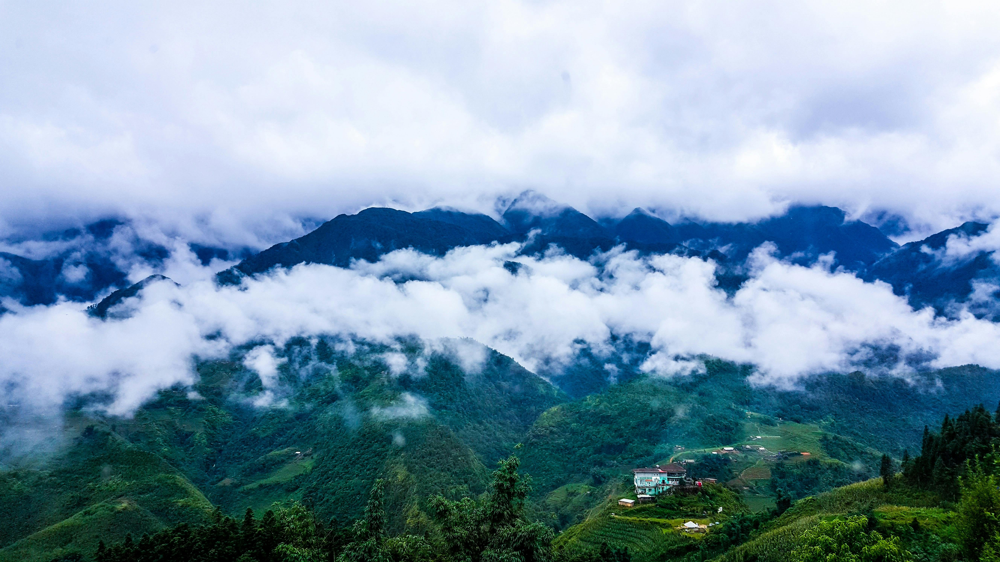
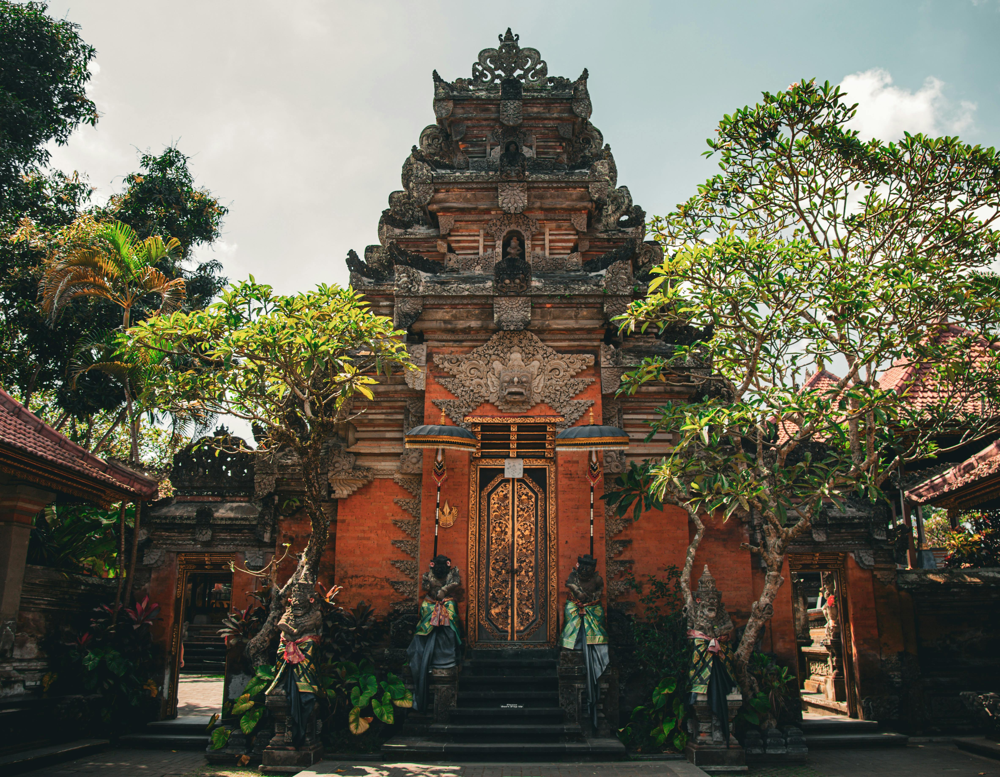

Destinos paradisíacos para todo el año
Los viajes paradisíacos te invitan a descubrir destinos exóticos en Asia, América, Oceanía y África, ofreciendo paisajes impresionantes y una belleza natural inigualable. Desde playas de ensueño hasta montañas majestuosas, estos lugares ofrecen experiencias inolvidables para todo tipo de viajeros.
Explora las islas idílicas, las montañas imponentes, los volcanes impresionantes y las playas paradisíacas que caracterizan estos destinos. Ya sea navegando por las aguas cristalinas del Caribe o relajándote en una playa bajo el sol, hay actividades para satisfacer todos los gustos.
Sumérgete en la naturaleza exuberante de estos lugares, desde avistar gorilas en África hasta descubrir la vida marina en arrecifes de coral. Los viajes paradisíacos son una oportunidad para conectar con la belleza natural de manera profunda y emocionante.
En este artículo, te guiaremos a través de nuestros destinos paradisíacos favoritos y las experiencias más emocionantes que ofrecen. Prepárate para vivir aventuras inolvidables y crear recuerdos duraderos en estos paraísos terrenales.
Kenya

Kenia, ubicado en el este de África, es un destino imprescindible para aquellos que buscan experiencias paradisíacas. A diferencia de otros destinos, Kenia ofrece una combinación incomparable de vida salvaje, paisajes espectaculares y una rica cultura local. Entre los lugares más destacados se encuentra el Parque Nacional Masai Mara, conocido por su impresionante vida salvaje y la Gran Migración, donde millones de animales cruzan las llanuras en busca de pastos frescos.
Además de su fauna, Kenia cuenta con maravillas naturales como el Parque Nacional de Amboseli, con vistas icónicas del Monte Kilimanjaro, y el Parque Nacional Tsavo, uno de los más grandes de África. Las playas de arena blanca de la costa de Kenia, como Diani Beach y Watamu, son destinos paradisíacos perfectos para relajarse y disfrutar del mar turquesa.
En la región costera, ciudades históricas como Mombasa y Lamu ofrecen una mezcla fascinante de cultura swahili, arquitectura colonial y playas hermosas. Pasear por las calles de Lamu es como retroceder en el tiempo, mientras que sus playas cercanas ofrecen un refugio tranquilo.
En resumen, Kenia combina aventura, naturaleza y cultura de manera única, junto con algunas de las playas más hermosas del mundo. Con su vida salvaje espectacular y paraísos costeros, Kenia promete una experiencia inolvidable para todos los viajeros.
Costa Rica
Costa Rica es un paraíso natural conocido por su impresionante diversidad de paisajes y vida silvestre. Situada en América Central, esta pequeña nación alberga una gran variedad de ecosistemas, que van desde densas selvas hasta playas de arena blanca y volcanes activos. Los viajeros quedan maravillados por la riqueza de su biodiversidad y la belleza escénica que ofrece en cada rincón del país.
Uno de los aspectos más destacados de Costa Rica es su asombrosa variedad de vida silvestre. El país es hogar de una amplia gama de especies, desde coloridas aves tropicales hasta mamíferos exóticos como monos, perezosos y jaguares. Además, sus aguas están llenas de vida marina, lo que convierte a Costa Rica en un destino ideal para el avistamiento de ballenas, delfines y tortugas marinas.
Los parques nacionales y reservas naturales de Costa Rica son verdaderos tesoros de conservación, protegiendo una gran cantidad de hábitats y especies en peligro de extinción. Lugares como el Parque Nacional Manuel Antonio, el Parque Nacional Tortuguero y la Reserva Biológica Monteverde son solo algunos ejemplos de las áreas protegidas que ofrecen experiencias únicas de contacto con la naturaleza.
Los paisajes de Costa Rica son igualmente impresionantes, con volcanes imponentes, exuberantes bosques tropicales, cascadas majestuosas y playas paradisíacas. Los visitantes pueden disfrutar de actividades como senderismo, canopy, rafting y surf, explorando la belleza natural del país de diversas maneras.
En resumen, Costa Rica es un destino que cautiva a los amantes de la naturaleza y a los aventureros por igual, ofreciendo una experiencia única llena de paisajes espectaculares, una fauna fascinante y una cultura cálida y acogedora.
Polinesia francesa

La Polinesia Francesa, un conjunto de islas dispersas en el vasto océano Pacífico, es un destino que evoca imágenes de paraísos tropicales y aventuras inolvidables. Conformada por 118 islas y atolones, esta región es conocida por su increíble belleza natural, sus aguas cristalinas y su rica cultura polinesia.
Una de las islas más famosas de la Polinesia Francesa es Tahití, la isla más grande y el corazón cultural y político del archipiélago. Aquí, los viajeros pueden explorar exuberantes selvas tropicales, cascadas serpenteantes y playas de arena blanca bordeadas de palmeras. La capital, Papeete, es un vibrante centro urbano donde se mezclan la modernidad y la tradición polinesia, ofreciendo una amplia gama de restaurantes, tiendas y mercados de artesanías locales.
Otro destino icónico de la Polinesia Francesa es Bora Bora, conocida por sus espectaculares paisajes de montañas cubiertas de vegetación y lagunas de aguas turquesas. Esta isla es famosa por sus lujosos resorts overwater, donde los huéspedes pueden disfrutar de vistas panorámicas del océano desde la comodidad de sus bungalows privados.
Además de Tahití y Bora Bora, la Polinesia Francesa cuenta con otras islas igualmente encantadoras, como Moorea, Huahine, Raiatea y Taha'a, cada una con su propio encanto y atractivos únicos. Desde practicar snorkel en arrecifes de coral vibrantes hasta explorar antiguos templos marae y participar en ceremonias culturales tradicionales, hay una variedad de actividades para que los visitantes disfruten y se sumerjan en la rica herencia de la Polinesia Francesa.
En resumen, la Polinesia Francesa es un destino de ensueño que ofrece una combinación perfecta de belleza natural, aventura y cultura polinesia, haciendo que cada visita sea una experiencia inolvidable en el paraíso.
Hawaii

Hawaii, el icónico archipiélago del Pacífico, es un destino que evoca inmediatamente la idea de viajes tropicales. Conocido por sus impresionantes playas y oportunidades de surf de clase mundial, como Pipeline en Oahu, Hawaii es el sueño de los amantes del océano y la aventura.
Más allá de sus playas de ensueño, Hawaii también se distingue por sus lujosos hoteles y resorts que ofrecen una experiencia de alojamiento inigualable. De hecho, uno de los resorts más destacados es el lugar donde se filmó la primera temporada de la exitosa serie "The White Lotus", ubicado en la exuberante isla de Maui.
Además de Oahu y Maui, la isla de Hawaii, la más grande del archipiélago, merece una visita. Aquí, los viajeros pueden disfrutar de magníficas playas, explorar volcanes activos y sumergirse en la impresionante naturaleza de la isla.
Con una infraestructura turística bien desarrollada, Hawaii ofrece todos los servicios de lujo necesarios para unas vacaciones inolvidables, consolidándose como uno de los principales destinos vacacionales del mundo.
Isla de Pascua

La Isla de Pascua, ubicada en medio del océano Pacífico, es un destino que despierta la curiosidad y la fascinación de viajeros de todo el mundo. Conocida por sus misteriosos moáis, estas enigmáticas estatuas de piedra, la isla ofrece una experiencia única que combina historia, cultura y belleza natural.
En cuanto a alojamiento, la Isla de Pascua cuenta con una variedad de opciones que van desde acogedores hospedajes familiares hasta hoteles de lujo. Muchos de estos alojamientos ofrecen vistas impresionantes al océano y brindan la oportunidad de sumergirse por completo en el ambiente mágico de la isla.
Además de explorar los famosos moáis y sus sitios arqueológicos, los visitantes pueden disfrutar de las hermosas playas de arena blanca y aguas cristalinas que bordean la isla. Actividades como el snorkel, el buceo y el senderismo ofrecen la oportunidad de descubrir la rica biodiversidad marina y los paisajes naturales únicos de la Isla de Pascua.
En resumen, la Isla de Pascua es mucho más que sus emblemáticos moáis. Es un destino cautivador que invita a los viajeros a sumergirse en su fascinante historia, explorar su impresionante belleza natural y disfrutar de una experiencia inolvidable en medio del vasto océano Pacífico.
Madagascar
La isla roja de Madagascar ofrece una experiencia única para aquellos que buscan un destino paradisíaco con un toque diferente. Si bien las playas de Nosy Be, un archipiélago al norte, son impresionantes, la isla principal también tiene mucho que ofrecer en términos de atracciones. Además de los encantadores hoteles, como el Masaola Forest Lodge que brinda una experiencia exclusiva para explorar el Parque Nacional de Masaola, Madagascar cuenta con una amplia variedad de lugares fascinantes para visitar a lo largo de la isla.
Dos de los lugares más impresionantes son la espectacular Avenida de los Baobabs y el intrigante Parque Nacional Tsingy, conocido por sus formaciones rocosas únicas. El Parque Nacional Isalo también es una parada obligatoria, ofreciendo la mejor experiencia de safari en el país. Para quienes buscan una experiencia playera diferente a Nosy Be, la isla de Santa María en la costa noreste de la isla es una opción intrigante. Este antiguo refugio de piratas es ideal para avistar ballenas y disfrutar del sol en playas vírgenes y pintorescas.
Madagascar no solo impresiona con sus paisajes y vida salvaje, sino también con su cultura rica y variada. La isla de Santa María, con sus playas vírgenes y la posibilidad de avistar ballenas, añade un encanto especial a cualquier visita. En resumen, Madagascar combina paisajes espectaculares, una rica biodiversidad y playas paradisíacas, creando una experiencia única y memorable para los viajeros.
Seychelles

Entre las joyas del océano Índico para realizar viajes paradisíacos, destacan las exuberantes Seychelles. A diferencia de las Maldivas, estas islas se distinguen por su tamaño considerable y la posibilidad de sumergirse en la cultura local durante la estadía.
Entre las islas más recomendadas se encuentran Mahé, La Digue y Praslin. En Mahé, la capital Victoria y el majestuoso Parque Nacional Morne Seychellois ofrecen una oportunidad única para explorar senderos serpenteantes a través de la densa selva, complementando las impresionantes playas de la isla.
La Digue, famosa por su belleza natural, alberga la aclamada Anse Source D'Argent, considerada una de las mejores playas del mundo. Sin embargo, cada rincón de esta isla ofrece una experiencia playera única y memorable. Además, La Digue es un puerto habitual para algunos de los mejores cruceros por el Oriente Medio, añadiendo un toque de lujo a la experiencia.
Por último, la isla de Praslin no decepciona con su oferta de playas y resorts de ensueño. Pero más allá de su belleza costera, Praslin alberga el impresionante Valle de Mai, un paisaje cultural declarado Patrimonio de la Humanidad por la UNESCO.
En Praslin, los visitantes pueden maravillarse con la belleza única de la naturaleza y la historia de estas islas paradisíacas, disfrutando de una experiencia inolvidable en un entorno verdaderamente idílico.
Bahamas

Las Bahamas, un archipiélago situado en el océano Atlántico, ofrece una experiencia paradisíaca en viajes tropicales que no tiene igual. Con sus aguas cristalinas y playas de arena blanca, este destino es un paraíso terrenal para aquellos que buscan escapar de la rutina y sumergirse en un entorno de ensueño.
Entre las islas más destacadas para visitar en las Bahamas se encuentra New Providence, donde se encuentra la capital Nassau, un lugar lleno de historia, cultura y vibrante vida urbana. Además, Paradise Island, conectada a New Providence por un puente, es conocida por sus lujosos resorts y su famoso complejo de entretenimiento Atlantis.
Por otro lado, las Exumas, un grupo de islas e islotes en las Bahamas, son un destino imprescindible para los amantes de la naturaleza y la aventura. Aquí, los visitantes pueden explorar hermosas playas desiertas, nadar con cerdos salvajes en Big Major Cay y bucear en las aguas cristalinas del Parque Nacional de Exuma Cays.
Las Bahamas también son conocidas por su rica historia pirata, que se puede explorar en lugares como Nassau, donde se encuentran el Museo Pirata y la Fortaleza Charlotte. Además, los amantes del buceo pueden explorar los numerosos naufragios que se encuentran en las aguas circundantes, mientras que los entusiastas de la pesca pueden disfrutar de algunas de las mejores pesquerías del mundo.
En resumen, las Bahamas ofrecen una experiencia única en viajes tropicales, combinando playas de ensueño, aventuras emocionantes y una rica historia y cultura que cautiva a los visitantes de todas partes del mundo.
Maldivas

Maldivas, un tesoro del océano Índico, es un destino de ensueño para quienes buscan experiencias tropicales inolvidables. Con sus playas de arena blanca, aguas cristalinas y lujosos complejos turísticos, este archipiélago ofrece un escape paradisíaco que encanta a viajeros de todo el mundo.
Entre las islas más destacadas para explorar en Maldivas se encuentra Malé, la animada capital, que ofrece una mezcla única de cultura local y modernidad. Además, los resorts de lujo en islas privadas ofrecen una experiencia exclusiva, donde los visitantes pueden disfrutar de la privacidad y la tranquilidad de sus propios paraísos tropicales.
Las Maldivas son famosas por sus actividades acuáticas, desde el buceo en arrecifes de coral hasta el avistamiento de mantarrayas y tiburones ballena. Los amantes del océano pueden explorar la impresionante biodiversidad marina de los atolones maldivos, donde se encuentran algunas de las mejores áreas de buceo del mundo.
Además de sus atractivos naturales, Maldivas ofrece la oportunidad de relajarse y rejuvenecer en sus lujosos spas y centros de bienestar. Con tratamientos inspirados en la tradición local y entornos serenos, los viajeros pueden disfrutar de una experiencia de bienestar total mientras se entregan al ambiente tranquilo de las islas.
En resumen, Maldivas es un destino que combina el lujo indulgente con la belleza natural, ofreciendo una experiencia tropical incomparable para aquellos que buscan escapar de la rutina y sumergirse en un paraíso terrenal.
Vietnam
Vietnam, en el sudeste asiático, es un destino fascinante para aquellos que buscan viajes tropicales llenos de historia, cultura y belleza natural. Con su combinación única de paisajes impresionantes, playas de ensueño y una rica herencia cultural, Vietnam ofrece una experiencia única que cautiva a los viajeros de todo el mundo.
Una de las atracciones más destacadas de Vietnam es la bahía de Ha Long, reconocida por sus espectaculares formaciones rocosas y aguas turquesas. Aquí, los visitantes pueden disfrutar de cruceros pintorescos, explorar cuevas misteriosas y maravillarse con la belleza natural de este sitio declarado Patrimonio de la Humanidad por la UNESCO.
Además de sus impresionantes paisajes costeros, Vietnam es hogar de ciudades vibrantes como Hanói y Ho Chi Minh, que ofrecen una mezcla única de tradición y modernidad. Los viajeros pueden explorar antiguos templos, bulliciosos mercados y saborear la deliciosa cocina vietnamita en las calles llenas de vida de estas ciudades históricas.
En resumen, Vietnam es un destino diverso y emocionante que combina la belleza natural con una rica herencia cultural. Ya sea explorando las maravillas naturales de la bahía de Ha Long o sumergiéndose en la vida urbana de sus ciudades, Vietnam ofrece una experiencia tropical inolvidable para todos los que buscan aventura y descubrimiento.
Bali
Bali, conocida como la "Isla de los Dioses", es un destino paradisíaco en Indonesia que cautiva a los viajeros con su belleza natural y su rica cultura. Desde sus exuberantes paisajes de arrozales en terrazas hasta sus impresionantes templos y playas de arena dorada, Bali ofrece una experiencia tropical única que deja una impresión duradera en todos los que la visitan.
Los templos emblemáticos de Bali, como el Templo de Besakih y el Templo de Tanah Lot, son lugares de gran importancia espiritual y ofrecen vistas impresionantes de la isla. Además, las playas de Bali son ideales para relajarse bajo el sol, practicar surf en las olas cristalinas o explorar la colorida vida marina mientras se bucea en las aguas cálidas del océano Índico.
La hospitalidad balinesa y su deliciosa gastronomía son parte integral de la experiencia de viaje. Los viajeros pueden disfrutar de una amplia variedad de platos tradicionales balineses en los warungs locales, así como de la cocina internacional en los restaurantes de clase mundial. Además, las actividades culturales, como las danzas tradicionales y las ceremonias religiosas, brindan una visión fascinante de la rica herencia de Bali.
En resumen, Bali es un destino tropical que ofrece una combinación única de belleza natural, cultura vibrante y hospitalidad cálida, lo que la convierte en un lugar verdaderamente mágico para explorar y descubrir.
Islas Lofoten

Situadas al norte del Círculo Polar Ártico, las Islas Lofoten son un tesoro natural en el corazón de Noruega. Este archipiélago, con sus montañas majestuosas que se elevan sobre fiordos profundos, ofrece una escapada inigualable en el paisaje escandinavo. Más allá de sus playas de arena blanca, las Lofoten son conocidas por sus encantadores pueblos pesqueros, donde las casas de colores vibrantes se reflejan en las aguas cristalinas.
Explorar las Lofoten es sumergirse en la cultura y el estilo de vida nórdicos. Desde caminatas por senderos escarpados hasta paseos en kayak entre islas, cada momento ofrece una conexión íntima con la naturaleza. En invierno, el espectáculo de las auroras boreales iluminando el cielo nocturno agrega un toque mágico a esta experiencia ártica.
Para los amantes de la aventura, las actividades al aire libre abundan. Ya sea escalando montañas escarpadas, pescando en alta mar o surfeando en aguas frías, siempre hay algo emocionante que hacer. Y después de un día de exploración, los acogedores cafés y restaurantes locales ofrecen la oportunidad perfecta para disfrutar de la cocina noruega tradicional y relajarse junto a una chimenea crepitante.
Las Islas Lofoten son mucho más que un destino turístico; son un santuario natural donde la belleza del Ártico se encuentra con la calidez de la hospitalidad escandinava. Para aquellos que buscan una escapada única en Europa, las Lofoten prometen una experiencia que perdurará en la memoria mucho después de regresar a casa.
Santorini

Anidada en el Mar Egeo, Santorini emerge como un paraíso de postal, donde las casas encaladas se aferran a acantilados escarpados y los atardeceres dorados pintan el cielo de tonos cálidos. Esta isla griega, famosa por sus espectaculares vistas y su encanto pintoresco, ofrece una experiencia inigualable en el corazón del Mediterráneo.
Desde el momento en que llegas a Santorini, te sumerges en su rica historia y su legado cultural. Los pueblos blancos y azules, como Oia y Fira, son un laberinto de callejuelas adoquinadas y plazas soleadas, donde cada esquina revela una nueva vista panorámica del mar infinito. No es de extrañar que artistas y poetas hayan encontrado inspiración en esta tierra de ensueño durante siglos.
Explorar Santorini es descubrir una variedad de experiencias únicas. Desde recorridos por antiguas ruinas arqueológicas hasta excursiones en barco por las aguas turquesas que rodean la isla, cada día ofrece una aventura emocionante. Y cuando llega la noche, los restaurantes junto al mar sirven delicias griegas frescas, mientras que los bares en las alturas ofrecen vistas panorámicas incomparables y cócteles artesanales.
Para aquellos que buscan relajarse y rejuvenecer, Santorini no decepciona. Con sus playas de arena negra y roja, como Perissa y Kamari, y sus lujosos spas boutique, la isla ofrece el escenario perfecto para escapar del ajetreo de la vida cotidiana y sumergirse en la serenidad del Mediterráneo.
Santorini es mucho más que una isla de vacaciones; es un destino que cautiva los sentidos y alimenta el alma con su belleza natural y su encanto atemporal. Ya sea explorando sus antiguos senderos, disfrutando de la cocina griega tradicional o simplemente contemplando la puesta de sol desde un acantilado, cada momento en Santorini es una experiencia que perdura para siempre en el corazón.
Madeira

Situada en medio del Atlántico, Madeira es un oasis de verdor y belleza que emerge del océano como un jardín flotante. Conocida como la "Perla del Atlántico", esta isla portuguesa ofrece una experiencia única que combina paisajes espectaculares, cultura vibrante y una hospitalidad cálida y acogedora.
Al llegar a Madeira, te reciben sus montañas cubiertas de exuberante vegetación y sus acantilados escarpados que se sumergen en el mar azul profundo. Los pueblos pintorescos, como Funchal y Santana, son una muestra del encanto tradicional de la isla, con sus casas de techos rojos y calles empedradas que invitan a explorar.
Explorar Madeira es adentrarse en un mundo de maravillas naturales. Desde los picos más altos de las montañas hasta las profundidades del océano, cada rincón de la isla ofrece una nueva aventura. Los senderos de levada, que serpentean a lo largo de antiguos canales de riego, ofrecen la oportunidad de descubrir cascadas ocultas y bosques de Laurisilva, un ecosistema único declarado Patrimonio de la Humanidad por la UNESCO.
La cultura de Madeira se refleja en su gastronomía, su música y sus festivales coloridos. Los restaurantes locales sirven delicias culinarias como el espetada (pinchos de carne a la parrilla) y el bolo do caco (pan de ajo tradicional), mientras que las tabernas ofrecen vinos y licores locales, como el famoso vino de Madeira.
Para aquellos que buscan relajarse y disfrutar, Madeira cuenta con una variedad de playas y balnearios, donde se puede disfrutar del sol y el mar en un entorno tranquilo y sereno. Además, los hoteles y resorts de lujo ofrecen una experiencia de alojamiento inigualable, con vistas panorámicas al océano y servicios de clase mundial.
En resumen, Madeira es un destino que cautiva los sentidos y eleva el espíritu con su belleza natural y su ambiente relajado. Ya sea explorando sus paisajes impresionantes, disfrutando de su cultura vibrante o simplemente relajándose junto al mar, cada momento en Madeira es una experiencia que perdura para siempre en el corazón.